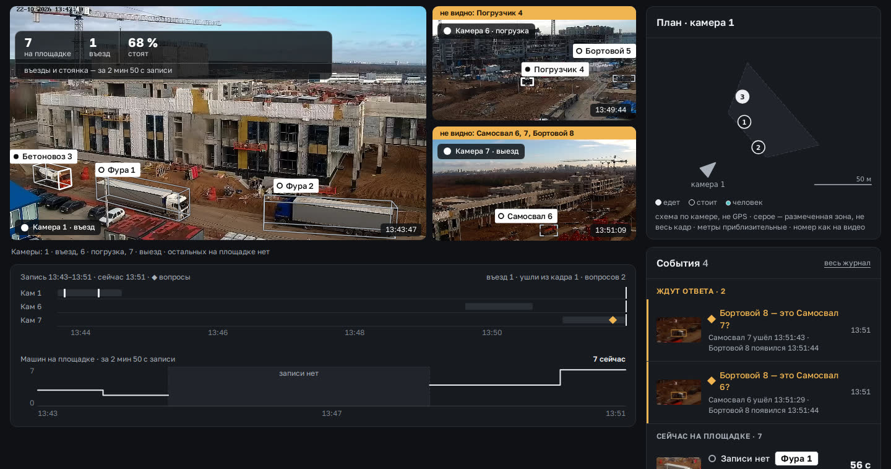
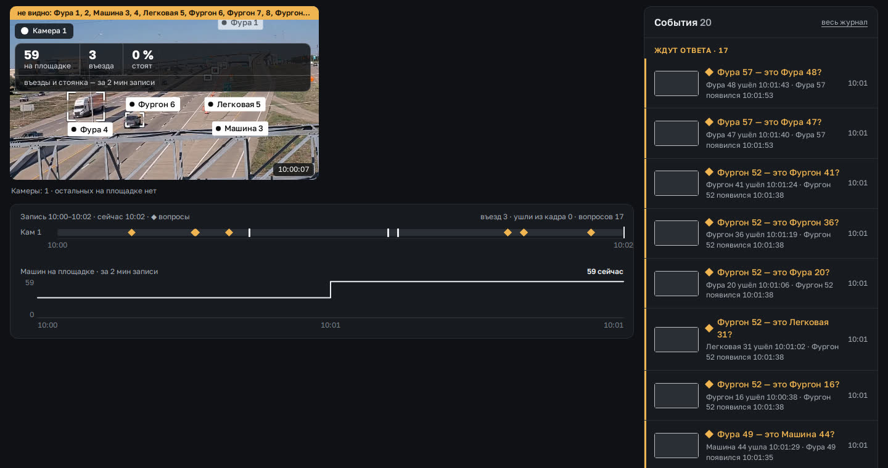

А · Лента одной строкой
Та же лента, только строки по 36 px, вопросы свёрнуты в одну жёлтую строку, фильтр типов чипами. «Сейчас на площадке» уходит из колонки (это вид «Пульт»).
«Блок событий выглядит громоздко… ещё чего-то не хватает… может, мне кажется». Не кажется: в одной колонке смешаны три разных списка, строка занимает 80–90 px, а наверху нет ответа «что мне делать сейчас». Ниже — разбор по снимкам и коду, как ленту делают профи, три варианта на тех же данных и честный ответ про «не хватает».
Вопросы «та же?», «Сейчас на площадке» (это машины, а не события) и «Закрыто». Заголовок «События 4» считает только часть.
Миниатюра, 2 строки заголовка, 2 строки пояснения, время и «55 с в кадре». В колонку влезает 6–7 строк; на потоке машин 17 вопросов — жёлтая стена.
«Что требует внимания сейчас» (кто стоит дольше всех, какая камера без кадра) и «сколько работает, едет, стоит». Остальное экран даёт.


Цельные экраны: Avigilon Alta (видеожурнал), Geotab Video, EarthCam (стройка), QMonitoring (образец). Verkada, Milestone и Samsara — цельных экранов ленты не нашли (в App Store у них рекламные баннеры), поэтому правила ниже — по тем, что есть на снимках.


время · значок типа · объект · камера. Пояснение и кадр — только у выбранной строки или в большом окне.
«На проверку · 17» — вкладкой или одной строкой со счётчиком, а не 17 строками в ленте.
Въезд, выезд, стоит, не видно, тревога — разные значки; цвет только у того, что требует действия.
Строка не раскрывается в карточку: событие открывается в большом окне с отметкой на шкале.
Колонка той же ширины, что справа у вида «Камеры» на 1440. Данные — запись кампуса 22.10, 13:43–13:51; кадры строк — вырезки той же записи, привязка к именам — пример. Нажмите строку — раскроется; переключите на «поток машин», чтобы увидеть 17 вопросов.
Та же лента, только строки по 36 px, вопросы свёрнуты в одну жёлтую строку, фильтр типов чипами. «Сейчас на площадке» уходит из колонки (это вид «Пульт»).
До трёх карточек «требует внимания»: кто стоит дольше всех, кого не видно, вопросы стопкой. Ниже — лента одной строкой по минутам.
Сверху четыре числа-фильтра: работают, едут, стоят, не видно. Ниже — машины по состоянию с таймером. События остаются отметками на шкале под видео.
Что прораб должен понять с экрана «Камеры» за один взгляд, и даёт ли экран это сегодня.
| Вопрос прораба | Задача КП | Сегодня | Что добавить |
|---|---|---|---|
| Что требует моего внимания сейчас? | 4 · долгий простой | нет всё в одной ленте, приоритета нет | Блок «Требует внимания» на 1–3 карточки (Б) |
| Сколько работает, сколько стоит? | 1 · кто что делает | частично «7 на площадке · 68 % стоят» на кадре; работа на месте склеена с движением | Строка из четырёх чисел над камерами или сверху колонки (В) |
| Кто стоит дольше всех? | 4, 7 | нет таймер «55 с в кадре» есть, сортировки и порога нет | Первая карточка «стоит 18 мин» в Б; сортировка по таймеру в В |
| Все ли камеры дают кадр? | 9 | частично жёлтые плашки «не видно: …» — про машины, не про камеры | «Камеры 3 из 3» в строке-сводке; плашку «нет кадра с 13:50» — только при обрыве |
| Что произошло за последние минуты? | 2 | частично есть, но смешано с вопросами и списком машин | Лента одной строкой с фильтром типов (А, Б) |
| Это та же машина? | 3 | есть вопрос с двумя кадрами и ответом одним касанием | При 5+ вопросах — одна строка «N вопросов · разобрать» и «принять уверенные» |
now у c3) — список машин есть в виде «Пульт».Сокол · разбор блока событий, 25.10. Снимки «сегодня» — с ветки stage/ugly-tipy-2510; пульт я не запускал, разбор по коду (v2/pages-a.js feedPanel, v2/kit.js eventLine) и снимкам. Не проверено: варианты не пробовал прораб; числа «стоит 18 мин» и сводка в В — пример.